The Moped tool [8] can check a pushdown system, from an initial configuration, against an LTL formula where the atomic predicates consists of a set of atomic symbols that checks the identity of the top stack symbol or the control location (i.e., simply checks name equality). In case the LTL formula is falsified a reduced pushdown system constructed from the original one, that also falsifies the LTL formula, is presented as diagnostic information.
To represent the non-identity atomic
predicates (e.g.,
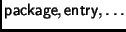)
as ``Moped LTL formulas'' a number of options
are possible.
Consider for instance the
 atomic predicate.
A direct representation of the predicate
in Moped LTL would consist of a disjunction over
all the program points in any class in the package.
atomic predicate.
A direct representation of the predicate
in Moped LTL would consist of a disjunction over
all the program points in any class in the package.
An alternative representation
strategy is to enrich the translation from
a call graph to a pushdown system.
Since Moped provides boolean variables
we could represent the current package identity
encoded in a set of boolean variables
in the pushdown system.
These variables would then
be updated for every rewrite rule
that crosses package boundaries. Finally
the representation of the
 predicate
itself would consist of a simple boolean condition.
predicate
itself would consist of a simple boolean condition.
We have instead opted to extend the Moped tool with atomic predicates that can match a control location, or the top stack symbol, against a regular expression. These predicates check the syntactic shape of the symbol being tested.
Consider the naming of
program points of a
method  by the call graph construction.
Its entry program point will be named
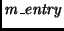,
its (unique) return program point will be
named
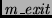,
and all other program points in
by the call graph construction.
Its entry program point will be named
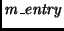,
its (unique) return program point will be
named
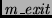,
and all other program points in  are of the form
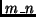 where 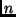 is a natural number.
are of the form
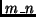 where 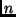 is a natural number.
With these conventions in place the atomic predicates can be represented in ``regular expression Moped'' as indicated below:
.'
has to be quoted using a backslash character
inside a regular expression to represent itself, rather
than representing any character.
So called wildcards can be used in a regular expression
to achieve a limited form of quantification over
program points. The static analysis tool,
for instance, gives the name
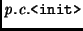
to an object constructor method
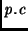.
Thus, whether the current program point
is in any object constructor can be tested by
the regular expression predicate
.*\..*\.<init>_.*.
As a further example,
the
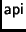 predicate,
which recognises control points inside an API function,
can be defined
`(java\.lang|javacard\..*|javacardx\..*).*'.